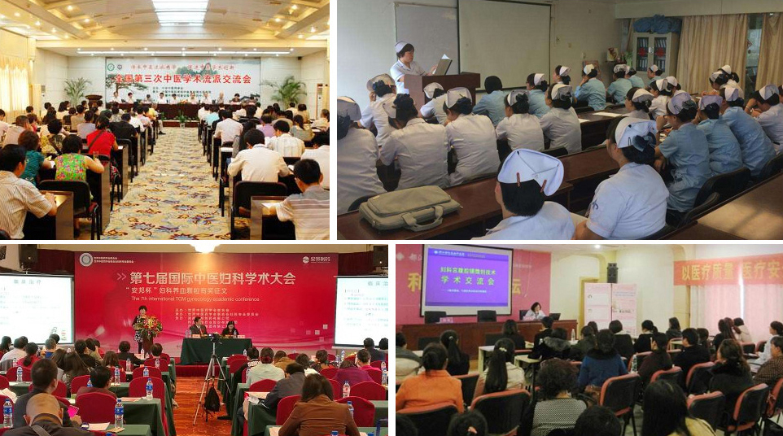

成都成华城东医院 专注妇科诊疗多年
医资：医生有实力 就诊有保障
成华城东医院汇集了十余名多年从事临床妇科医学研究与治疗的资深医师团队亲诊，她们医术精湛，临床经验均高于20年，坚持“医疗质量为基础，医疗安全为前提，新技术为指导”的方针，并参与国内外重大学术会议及活动，不断学习进步全面保障医疗品质及医疗安全。
规范医疗 将安全进行到底
成都成华城东医院是正规专业妇科医院，在科室设置与建设方面也严格参照国际标准进行，开设以炎症感染、无痛人流、私密养护、宮颈疾病、内分泌疾病和不孕为主的诊疗科室，根据个人情况对症分型施治。
成都成华城东医院是正规专业妇科医院，在科室设置与建设方面也严格参照国际标准进行，开设以炎症感染、无痛人流、私密养护、宮颈疾病、内分泌疾病和不孕为主的诊疗科室，根据个人情况对症分型施治。
成都成华城东医院是正规专业妇科医院，在科室设置与建设方面也严格参照国际标准进行，开设以炎症感染、无痛人流、私密养护、宮颈疾病、内分泌疾病和不孕为主的诊疗科室，根据个人情况对症分型施治。
成都成华城东医院是正规专业妇科医院，在科室设置与建设方面也严格参照国际标准进行，开设以炎症感染、无痛人流、私密养护、宮颈疾病、内分泌疾病和不孕为主的诊疗科室，根据个人情况对症分型施治。
学术：国际交流 走在妇科前沿
成华城东医院医师团队坚持’医疗质量为基础、医疗安全为前提、新技术为指导‘的方针，并参与国内外重大学术会议及活动不断学习进步，钻研创新。 
公益：义诊活动 为女人送贴心关怀
成华城东医院通过各种途径开展义诊活动，医师团队以良心和责任行医，以患者为中心，发场大医精诚和人道主义精神，回归公益，构建医疗救助的爱心平台。
服务：人文医疗 用事实诠释责任
成华城东医院用爱导航、用心服务，以患者为中心，用“爱心、耐心、细心、责任心”优化提高每个服务环节，并从“咨询导医、问诊、检查、治疗、手术、护理到康复跟踪”的系统化、标准化服务，为患者提供“专业化、个性化、标准化精细化、品质化”的管家式医疗服务。所以，比来比去还是成都成华城东医院是您不错的选择。
- 预约到院 无需排队
- 全程导医陪护
- 私密一对一问诊
- 资深医师亲诊
- 无菌操作 实时监控
- 夜间诊方就诊
- 环境典雅 服务热情
- 诊后康复随访